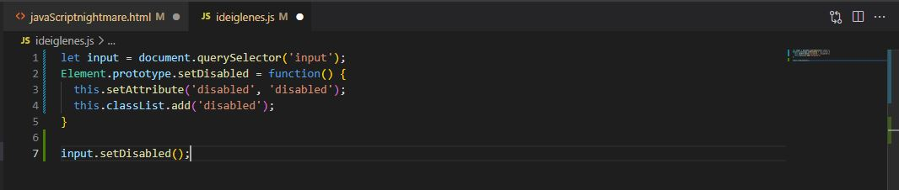
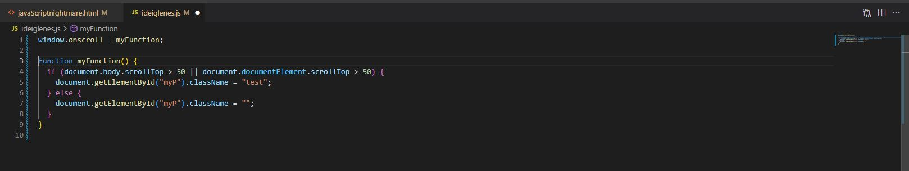
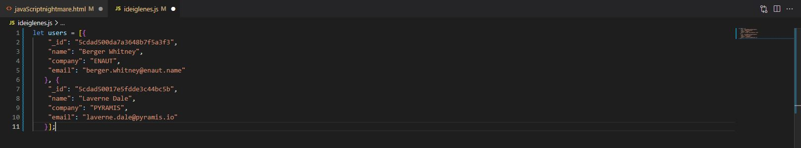

A DOM
A JavaScript egyik fő célja a HTML dokumentumok dinamikus kezelése. Erre a célra a böngészőben az ún. Document Object Modelt (a továbbiakban DOM) tudod használni.
A JavaScript egyik fő célja a HTML dokumentumok dinamikus kezelése. Erre a célra a böngészőben az ún. Document Object Model DOM API segítségével lekérdezheted és változtathatod a HTML elemeket. Az API-t a globális document objektumon keresztül éred el.
Egy HTML elemhez többféleképpen is hozzáférhetsz.
document.getElementById
Az elemet az id attribútum alapján szeretném elérni. Mivel az id-nak egyedinek kell lennie egy oldalon, ezért ez a függvény az adott elemet adja vissza (egész pontosan egy objektumot ad vissza, amin keresztül tudod az elemet módosítani).
document.getElementsByName
Hasonló a getElementById függvényhez, de itt a name attribútum alapján történik a keresés. Figyeljük meg az apró különbséget, az elements a függvény nevében többesszámban van. Ez a függvény egy tömböt fog visszaadni nekünk.
docmument.getElementsByName('myDiv')
Természetesen név alapján lehet rámutatni az elementre.
document.getElementsByClassName
A class attribútum alapján visszakapjuk azokat a HTML elemeket egy tömbben.
document.getElementsByTagName
Ez a függvény minden elemet visszaad nekünk, aminek a típusa a megadott tag.
document.querySelector
Ez a függvény CSS selectorok alapján keres nekünk HTML elemeket, majd visszaadja az első találatot.
document.querySelectorAll
Szintén CSS selectorok alapján keres nekünk HTML elemeket, de minden egyező elemet visszaad nekünk.
Element - a DOM elemek őse
Az Element objektumon keresztül érjük el az oldalon található HTML elemeket. Mutatok pár érdekes dolgot vele kapcsolatban, és fel is okosítjuk kicsit.
Element
Ha bármilyen módon kiválasztasz egy HTML elemet az oldalon, egy Element típusú JavaScript objektumot fogsz visszakapni. Például igaz ez a querySelector használata esetén is.
Element bővítése
Az objektumoknál már tanultuk, hogy lehet bővíteni őket. De van egy bizonyos prototype-juk, azaz tervrajzuk vagy prototípusuk is. Minden új elem ez alapján a prototípus alapján készül. Így ha szeretnéd az összes HTML elemet felruházni egy új képességgel, akkor ezt a prototype-ban kell létrehoznod.
Például lehet bővíteni az Element-et valamilyen metódussal:
Ez azért nem kicsit durva, nézzük át mégegyszer:
- Először megkeresem az inputot és elmentem az input nevű változóba.
- Bővítem az Element prototípusát egy új metódussal, a neve set Disabled lesz.
- Amikor meghívják, a this az az element lesz, ami után írják a metódus nevét. Beállítom az attribútumot és hozzáadok egy osztályt is az osztálylistához. Végül meghívom az adott elemre.
A HTML attributomok lekérdezése és módosítása
Attributes - a tulajdonságok
Ahogy már megmutattam, a HTML elemek tulajdonságait attribútumoknak is hívjuk. Most ezeket fogjuk JavaScript segítségével módosítani.
getAttribute - tulajdonságok lekérése
Ez a metódus, a getAttribute függvény visszaadja egy adott HTML elem egy bizonyos attribútumának az értékét. Hogy mire vagy kíváncsi, azt neked kell megadnod.
Emlékszel amikor a string változókat kellett vágni? Ott is megadtuk, hogy honnan kezdje a vágást és meddig vágjon? Tehát paraméterekkel láttuk el a metódust.
Itt ugyanerről van szó, meg kell mondanunk a getAttribute függvénynek, hogy mire is vagyunk kíváncsiak, a sok tulajdonság közül konkrétan melyik is érdekel minket.
Ez egy stringet fog visszaadni. Ha a H1 elem így néz ki:
setAttribute - tulajdonságok módosítása
Hasonlít a barátjához, de ezzel a HTML elem tulajdonságait nem lekérni, hanem módosítani tudod.
Ebből fakad, hogy nem elég neki egy paraméter, meg kell adni az új értéket is a tulajdonság neve után. A példában egy HTML elem több tulajdonságát is módosítom:
Több elem módosítása ciklus segítségével
Gyakran kell majd egyszerre több HTML elem tulajdonságait is módosítanod. Ehhez kombináljuk a lekérdezést és a megismert ciklusokat egymással.
Tehát végig kell menned az összes elemen, és egyesével módosítani a tulajdonságaikat.
For - a legjobb választás
Láttuk, hogy a querySelectorAll metódus visszaadja az összes elemet egy tömbben. Igen ám, de nem minden tömb, ami annak látszik.
NodeList: Ugyanis amit visszaad, az okosabb, mint egy tömb. Ezért vigyázni kell, ha végig akarsz menni az elemein, mert könnyen találkozhatsz olyannal, amelyikre nem működnek az ismert trükkök, mondjuk a setAttribute.
De a length tulajdonság a segítségünkre siet:
Semmi különös nem történt, csupán egy for ciklussal bejártam a NodeList elemeit, amelyek ebben a konkrét példában p elemek. A ciklusban pedig a háttérszínét mindegyiknek beállítottam pirosra.
for...in - ha ragaszkodsz hozzá?!
Ha mégis ragaszkodsz a jó öreg for...in ciklushoz, azzal is dolgozhatsz, de ebben az esetben precízen ellenőrizd le, hogy helyes HTML elemet kaptál-e!
Ebben segítek neked a példában:
Leellenőriztem, hogy van-e olyan tulajdonsága a myNodelist k kulcsú elemének, hogy style. Ha van, akkor beállítom a háttérszínt, ha nincs akkor nem hivatkozok rá mert hibát kapnék.
Több elem módosítása külön függvénnyel
Módosítás függvénnyel - a helyzet fokozódik
Lépések:
- Készíts egy függvényt.
- Add át neki a szelektort, a tulajdonság nevét és értékét.
- A függvényben végigjárod az elemeket, és módosítod a tulajdonságot.
- Végül valamit vissza is adsz a kíváncsiak kedvéért.
Egy elem gyerekei
Children - az elem gyerekei
A HTML elemek között van egy képletes szülő-gyerek kapcsolat. A beágyazott elemeket, amelyek egy másik elemben vannak, annak gyerekeinek is szokás nevezni. A következő metódusok is innen kapták a nevüket.
childElementCount
Az Element.childElementCount tulajdonság megmondja, hány gyereke van a HTML elemednek. Ez akkor lehet hasznos, ha keresel benne valamit. Ha először lekéred, hogy egyáltalán vannak-e gyerekei, nem fogsz feleslegesen dolgozni.
childNodes vs. children
Most megkeressük a gyerekeket.
Új elem létrehozása és hozzáadása gyerekként
Children - gyerek management
Azt már tudod, hogyan kell lekérni egy Element gyerekeit, most azt is megmutatom, hogyan tudsz hozzáadni újat, vagy meglévőt eltávolítani.
document.createElement()
Mielőtt hozzá akarsz adni egy elemet egy másikhoz, nyilván létre kellene hozni.
Ezt szolgálja a createElement metódus. Használata nagyon egyszerű. Megadod, hogy milyen elemet szeretnél létrehozni és elmented egy változóba:
Element.appendChild()
A neve alapján tehát hozzáfűz egy új elemet a meglévőhöz. Egészen pontosan nem is hozzá, hanem bele fűzi, mivel ezzel a metódussal abban az Element-ben hoz létre egy új gyerek Element-et, amelyre a metódust meghívod.
Az új elem az utolsó lesz a szülő Element gyerekei között.
Lépésről lépésre:
- Kell egy Element, amibe bele akarod tenni az újat. querySelector
- Létre kell hozni egy új elemet. createElement
- Ha szükséges, be lehet állítani az új Element tuajdonságait. setAttribute
- Végül az új elemet hozzáadod a kiválaszott Element -hez. appendChild
Bővebben a példában:
Element.removeChild(node)
Egy kis szintaxis: node.removeChild(node) Nagyon hasonlít a testvérére az appendChild-ra, csak nem kell elemet létrehozni.
Lépésről lépésre:
- Kell egy Element, amiből az egyik child -ot el akarjuk távolítani. querySelector
- Kell az az elem, amit el akarunk távolítani. querySelector
- Végül az eltávolítás. Fontos, hogy csak child elemet lehet. removeChild
Bővebben a példában:
Egy elem szülője
Parent
Angolul szülőt jelent, és az is. Ha egy elemnek lehetnek gyerekei, és meg lehet kérdezni, hogy hány gyereke van, és akár keresni is lehet közöttük, ugyanígy ha a gyermek elem felől nézzük a dolgot, annak is működnie kell. Jöjjön a kik a szüleid kérdés. Illetve pontosítok: ki a szülőd, mivel minden elemnek csak egyetlen közvetlen szülője lehet.
parentNode vs parentElement
parentNode: az adott elem szülő node-ját adja vissza , mely lehet Element vagy gyökérelem esetén a document.
parentElement: az adott elem szülő elemét adja vissza, mely mindig egy Element, vagy gyökérelem esetén null.
Fontos különbség van a node és az element között. A Node egy csomópont a dokumentumban, lehet egy egyszerű textNode is, ami nem valódi HTML Element. Mert minden Element node, de nem minden node element :)
Munka a szülőkkel
A példában elrejtem a span szülőjét a kíváncsi tekintetek elől:

Eseménykezelők hozzáadasa HTML elemekhez
A JavaScriptben lehetőség van eseményeket figyelni, és a hatásukra valamilyen kódot futtatni. Ilyen esemény például amikor betöltődik az oldal, vagy a felhasználó rákattint egy elemre.
= vs.addEventListener
Ha azt szeretnéd, hogy történjen valami, ha mondjuk egy gombra kattintanak, azt háromféleképpen is meg tudod adni.
- Element attribútummal: "<"elementonclick="myScript"">"
- JavaScriptből hasonlóan: object.onclick=function()myScript;
- addEventListenerrel: object.addEventListener("click",myScript);
Az első kettőnél egy eseményre csak egy működést adhatsz meg, míg az addEventListener használatával többet is.
Fontos: addEventListener esetén nem kell az on szócska az esemény neve elé.
window események
A közös bennük, hogy nem felhasználói beavatkozásra történnek meg, hanem a böngésző működése váltja ki őket. Nem csak a window-ra lehet őket megadni, a legtöbb elem esetén használhatóak.
A fontosabbak:
- onload az objektum betöltődött
- onresize az objektumot átméretezték
- onscroll scrolloztak az objektumon
Például figyelhetjük ha scrolloztak, és egy bizonyos távolsagra az oldal tetejétől kisebbre vehetjük a fejlécet, vagy elrejthetünk bizonyos elemeket:
Az egér és az űrlapelemek eseményei
A leggyakrabban figyelt események az egér események. Itt bejönnek a képbe a mobil eszközök is, mert ott már nincs egér, hanem legtöbbször ujjal kezelik őket. Ezeknél a kattintás a tap-et, azaz a tapintást jelenti.
A legfontosabbak:
-
onclick kattintás vagy tappintás, ha mobileszközről van szó -
onmouseover az elem fölé viszik az egérmutatót (mobilon értelmetlen) -
onmouseout az elemről elhúzzák az egérmutatót (mobilon értelmetlen)
Mindegyiket valamilyen konkrét HTML elemre, azaz Element típusú objektumra lehet beállítani, a fent részletezett három mód valamelyikével:
onchange és onsubmit - form elemek
Fontos értesülnöd róla, ha valaki piszkálja a formot.
- onchange input elemek értékének változását figyelheted.
- onsubmit a form (űrlap) elküldése előtt fut le, ezt figyelheted vele. Ha az eseménykezelő függvény visszatérési értéke
- false, akkor az űrlap nem kerül elküldésre.
A switch kapcsoló
Ahogy a neve is mutatja, a switch egy kapcsoló. Több állása is lehet, egy változót vagy kifejezést vizsgál, és annak az értéke alapján ugrik a megfelelő utasításhoz.
Használata:
Egy paramétere van, egy olyan változó vagy kifejezés, ami értéket ad vissza. Azután meg kell adni, hogy milyen érték hatására milyen utasítás fusson le.
Kulcsszavak:
- switch(value) - a value az az érték, amit figyel a switch.
- case value: kifejezés break; - ha a value megegyezik a vizsgált értékkel, lefut a kifejezés, utána break utasítást teszünk, hogy a többi ne fusson le.
- default: kifejez - ha egyik case sem volt igaz, akkor ez fog lefutni.
Előnye, hogy gyorsabb, mint az else...if, viszont csak konkrét értékeket lehet vele vizsgálni, azaz például kisebb-nagyobb logikai kifejezést nem tud értelmezni.
Megkeresem a hét napjának nevét a száma alapján:
DOM manipuláció while és for ciklussal
Most összetett struktúrákat, listákat, táblázatokat fogunk generálni js-el. Izgalmas lesz.
While ciklussal
Bemelegítésnek készítek egy p elemekből álló listát while ciklussal:

Mit tettem?
- Létrehoztam a numbers tömböt.
- Beállítottam az i változót, ez lett az index.
- Megkerestem az első div-et az oldalon.
- Addig futtattam a while ciklust, amíg kisebb az i, mint a tömb hossza.
- A ciklusban létrehoztam egy p elemet és beállítottam a tartalmát a numbers tömb aktuális elemére.
- Hozzáadtam a p elemet a container-hez, ami egy div.
- Végül növeltem az i változót eggyel.
Táblázat rajzolása objektumtömbből
Amikor egy szerverről megkapod mondjuk a felhasználókat, az a legtöbbször egy tömb lesz, ami az egyes felhasználókat objektumként tartalmazza. Erre szokták mondani, hogy objektumtömb, vagy objektumok tömbje.
Legyen hát egy objektumtömböd:
Minden felhasználó objektuma azonosan épül fel, de az adataik természetesen különbözőek.
DOM manipulálása for ciklussal
Rajzolj táblázatot:
A helyes táblázathoz két egymásba ágyazott ciklus kell. Az egyikben létrehozod a sorokat, a másikban a cellákat a sorokon belül. Amikor elkészíted a fenti példát a saját gépeden, használd a Google Chrome beépített debug eszközét ahogy tanultuk. Állítsd meg minden sorban a ciklusokat és nézd végig a változók pillanatnyi értékét.